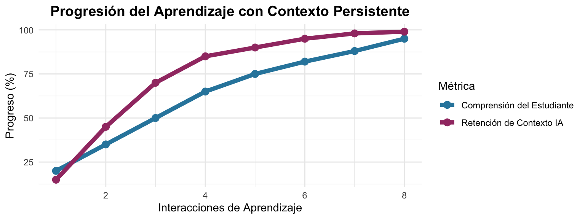
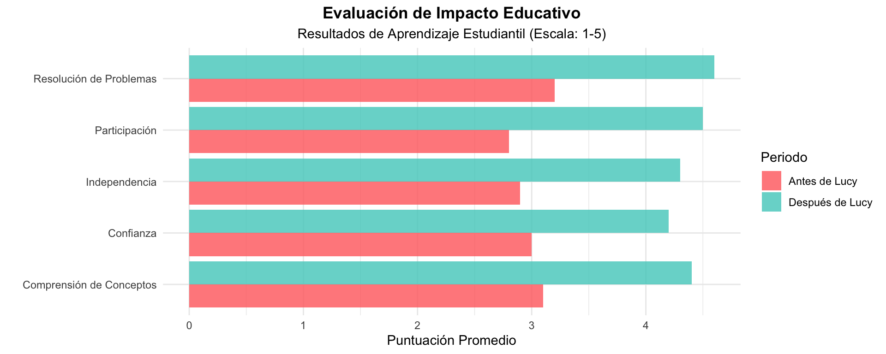

flowchart TD
A[Entrada del Estudiante] --> B{Tipo de Contenido}
B --> C[📝 Preguntas de Texto]
B --> D[📸 Carga de Imágenes]
B --> E[📊 Análisis de Documentos]
C --> F[Procesamiento IA]
D --> F
E --> F
F --> G[📋 Análisis Detallado]
F --> H[💡 Insights de Aprendizaje]
F --> I[🎯 Ayuda Personalizada]
style A fill:#e1f5fe
style F fill:#f3e5f5
style G fill:#e8f5e8
style H fill:#fff3e0
style I fill:#fce4ec
Lucy - Plataforma Avanzada de Asistente IA
Chatbot de IA Multimodal con Análisis de Imágenes y Contexto Persistente
Alexis Roldan
2025-10-16
Bienvenidos a Lucy 🤖✨

Compañero Avanzado de Aprendizaje IA
- 🖼️ IA Multimodal - Análisis de Texto + Imagen
- 🔒 Autenticación Segura - Sistema de gestión de usuarios
- 📚 Enfoque Educativo - Estudiantes y educadores
- 💬 Contexto Persistente - Historial de conversaciones
- 🎨 Interfaz Personalizable - Temas claro/oscuro
- 📱 Móvil Optimizado - Compatible con todos los dispositivos
Características Revolucionarias 🚀
- 📚 Ayuda con Tareas: Sube hojas de problemas para soluciones paso a paso
- 🔬 Análisis de Laboratorio: Analiza datos experimentales e imágenes
- 📖 Revisión de Documentos: Obtén insights de libros de texto y papers
- 🧮 Soporte Matemático: Resolución visual de problemas con diagramas
- 🌍 Aprendizaje de Idiomas: Vocabulario y contexto basado en imágenes
- 🎨 Proyectos Creativos: Análisis artístico y retroalimentación creativa

Casos de Uso Educativos 📚
Primaria y Secundaria: - 📐 Resolución de Problemas Matemáticos: Sube imágenes de ejercicios para soluciones guiadas - 🔤 Comprensión Lectora: Analiza pasajes de texto e imágenes - 🌱 Experimentos Científicos: Sube fotos de laboratorio para análisis - 🎨 Proyectos Artísticos: Obtén retroalimentación creativa y técnicas
Preparatoria: - 🧪 Química: Analiza estructuras moleculares y reacciones - 📊 Estadística: Sube gráficos y datos para interpretación - 📝 Redacción de Ensayos: Obtén retroalimentación estructurada y mejoras - 🌍 Historia: Analiza documentos históricos e imágenes
Universidad: - 🔬 Proyectos de Investigación: Analiza datos complejos e imágenes - 📋 Apoyo de Tesis: Revisión de literatura y orientación metodológica - 💻 Ayuda con Programación: Debug de código con análisis visual de errores - 📈 Ciencia de Datos: Análisis estadístico y soporte de visualización
Maestros y Educadores: - 📖 Desarrollo Curricular: Crear planes de lección atractivos - 📊 Diseño de Evaluaciones: Desarrollar métodos efectivos de evaluación - 🎯 Analítica Estudiantil: Entender patrones de aprendizaje - 💡 Innovación: Integrar herramientas IA en educación
Arquitectura Técnica 🏗️
flowchart TB
subgraph "Capa Frontend"
A[Interfaz Web Shiny]
B[Diseño Responsivo]
C[Sistema de Carga de Archivos]
end
subgraph "Capa de Autenticación"
D[Gestión de Usuarios]
E[Almacenamiento AWS S3]
F[Control de Sesiones]
end
subgraph "Capa de Procesamiento IA"
G[OpenAI GPT-4 Vision]
H[Integración Ellmer]
I[Análisis de Imágenes]
J[Gestión de Contexto]
end
subgraph "Capa de Datos"
K[Almacenamiento Persistente]
L[Historial de Conversaciones]
M[Preferencias del Usuario]
end
A --> D
B --> A
C --> A
D --> G
E --> D
F --> D
G --> K
H --> G
I --> G
J --> G
K --> L
K --> M
style A fill:#e1f5fe
style G fill:#f3e5f5
style K fill:#e8f5e8
Escenarios de Aprendizaje Reales 🌟
Escenario 1: Ayuda con Matemáticas
El estudiante sube: Problema de geometría con diagrama Lucy proporciona: - Desglose de solución paso a paso - Explicación visual de conceptos - Problemas de práctica similares - Consejos y trucos de aprendizaje
Escenario 2: Análisis de Laboratorio
El estudiante sube: Imágenes de microscopio Lucy proporciona: - Identificación detallada de especímenes - Explicaciones de procesos biológicos - Conexión con conceptos del curso - Sugerencias de investigación adicional
Escenario 3: Aprendizaje de Idiomas
El estudiante sube: Texto extranjero o señales Lucy proporciona: - Traducción precisa - Contexto cultural - Explicaciones gramaticales - Guías de pronunciación
Escenario 4: Retroalimentación Artística
El estudiante sube: Obra de arte creativa Lucy proporciona: - Análisis técnico - Identificación de estilo - Sugerencias de mejora - Contexto histórico
Funciones Avanzadas en Detalle 🔍
- 📸 OCR de Documentos: Extrae texto de notas manuscritas
- 📊 Lectura de Gráficos: Interpreta gráficos y visualizaciones de datos
- 🧬 Imágenes Científicas: Analiza resultados de laboratorio y especímenes
- 🎨 Análisis Artístico: Entiende composición y técnicas
- 📐 Diagramas Matemáticos: Resuelve problemas geométricos
- 🗺️ Mapas y Geografía: Análisis de ubicación y terreno
- 🔄 Continuidad de Contexto: Recuerda preguntas e imágenes previas
- 📈 Progresión de Aprendizaje: Rastrea mejora a lo largo del tiempo
- 🎯 Respuestas Personalizadas: Se adapta a estilos individuales de aprendizaje
- 📚 Construcción de Conocimiento: Conecta nuevos conceptos con aprendizaje previo
- 🔐 Autenticación de Usuario: Sistema seguro de inicio de sesión
- ☁️ Almacenamiento en la Nube: Integración AWS S3 para escalabilidad
- 🛡️ Protección de Datos: Comunicación encriptada
- 👤 Controles de Privacidad: Gestión de datos del usuario
Guía de Implementación 🛠️
Primeros Pasos: 1. 📝 Registrarse: Crear cuenta personal 2. 📸 Subir: Compartir tareas, notas o preguntas 3. 💬 Chatear: Hacer preguntas en lenguaje natural 4. 📚 Aprender: Obtener explicaciones detalladas y orientación 5. 🔄 Seguimiento: Continuar conversaciones sobre temas 6. 🆕 Reiniciar: Comenzar conversaciones frescas cuando sea necesario
Métricas de Éxito e Impacto 📈
Mejoras Clave
- 📊 44% de aumento en eficiencia de resolución de problemas
- 🎯 42% de mejora en comprensión de conceptos
- 🚀 61% de impulso en participación estudiantil
- 💪 48% de crecimiento en independencia de aprendizaje
- ✨ 40% de aumento en confianza académica
Accesibilidad e Inclusión 🌈
Características de Diseño Universal
- ♿ Compatible con Lector de Pantalla: Soporte completo de accesibilidad
- 🌐 Soporte Multilingüe: Interfaces en múltiples idiomas
- 📱 Responsivo Móvil: Funciona en cualquier dispositivo
- 🎨 Personalización Visual: Temas y fuentes ajustables
- 🔊 Integración de Audio: Capacidades de entrada/salida de voz
- ⌨️ Navegación por Teclado: Accesibilidad completa por teclado
Soporte para Diferencias de Aprendizaje
- 🧠 Amigable para TDAH: Respuestas estructuradas y en pequeñas porciones
- 👁️ Aprendices Visuales: Análisis rico de imágenes y diagramas
- 👂 Aprendices Auditivos: Explicaciones claras y descripciones
- ✋ Aprendices Kinestésicos: Resolución interactiva de problemas
Beneficios de Educación Inclusiva
- 🎯 Aprendizaje Personalizado: Se adapta a necesidades individuales
- ⏰ Progreso Autodirigido: Aprende a tu propio ritmo
- 🤝 Soporte Colaborativo: Comparte insights con compañeros
- 📝 Múltiples Formatos: Texto, imágenes y explicaciones visuales
- 🌟 Construcción de Confianza: Ambiente de aprendizaje sin juicios
- 🔄 Soporte Continuo: Disponible 24/7 para aprendizaje
¡Comienza Hoy Mismo! 🚀
Paso 1: Programa Piloto - Comenzar con una clase o materia - Entrenar 2-3 educadores en la plataforma - Recopilar retroalimentación inicial e iterar
Paso 2: Despliegue Gradual - Expandir a nivel departamental - Crear pautas de uso y mejores prácticas - Desarrollar estrategias de integración curricular
Paso 3: A Nivel Institucional - Desplegar en todos los programas relevantes - Establecer programas de soporte y entrenamiento - Monitorear analíticas de uso y resultados
- 💰 Costo-Efectivo: Pagar solo por uso de IA
- 📈 Escalable: Crece con tu institución
- 🛠️ Personalizable: Se adapta a necesidades específicas
- 📊 Analítica: Rastrea uso y resultados de aprendizaje
Hoja de Ruta Futura 🔮
Mejoras Planificadas
- 🎥 Análisis de Video: Subir y analizar videos educativos
- 🔊 Integración de Voz: Voz a texto y texto a voz
- 📝 Calificación Automatizada: Evaluación de tareas con IA
- 👥 Espacios Colaborativos: Ambientes de aprendizaje grupal
- 📊 Analítica Avanzada: Insights detallados de aprendizaje
- 🌐 Integración API: Conectar con herramientas educativas existentes
Investigación y Desarrollo
- 🧠 Aprendizaje Adaptativo: IA que aprende preferencias estudiantiles
- 🎯 Analítica Predictiva: Identificar brechas de aprendizaje temprano
- 🤖 Razonamiento Avanzado: Resolución más sofisticada de problemas
- 🌍 Accesibilidad Global: Soporte para más idiomas
Construcción de Comunidad
- 👨🏫 Entrenamiento de Educadores: Programas de desarrollo profesional
- 📚 Biblioteca de Recursos: Planes de lección y actividades compartidas
- 🏆 Mejores Prácticas: Historias de éxito y estudios de caso
- 🤝 Asociaciones: Integración con editores educativos
- 🔬 Colaboración de Investigación: Oportunidades de investigación académica
- 💡 Laboratorios de Innovación: Características experimentales y pruebas
Sostenibilidad
- ♻️ Computación Verde: Procesamiento IA eficiente
- 💚 Impacto Social: Democratizando educación de calidad
- 🌱 Aprendizaje Continuo: Evolucionando con necesidades educativas
- 🤝 Código Abierto: Desarrollo impulsado por comunidad
Llamada a la Acción 📢
¡Transforma la Educación con IA Hoy!
Para Educadores e Instituciones
🚀 Inicia tu Programa Piloto - Programar Demo - Descargar Guía de Configuración - Únete a Red de Educadores
Para Estudiantes
📚 Comienza tu Aprendizaje Mejorado con IA - Prueba la instancia demo - Sube tu primera pregunta de tarea - Experimenta el aprendizaje personalizado
Para Desarrolladores
💻 Contribuye y Personaliza - Hacer fork del repositorio - Agregar nuevas características - Compartir mejoras
Para Investigadores
🔬 Colabora y Estudia - Investigación de impacto educativo - Estudios de efectividad del aprendizaje IA - Proyectos de mejora de accesibilidad
¡Gracias! 🙏
Contacto y Recursos
📧 Email: alexis.m.roldan.ds@gmail.com
🐙 GitHub: @roldanalex
🔗 Repositorio: Personal-Assistant-AI
📚 Documentación: Disponible en repositorio
¡Involúcrate Hoy!
Preguntas y Discusión
¿Listo para revolucionar la educación con IA?
- ¿Estrategias de implementación?
- ¿Ideas de integración curricular?
- ¿Requisitos técnicos?
- ¿Necesidades de despliegue personalizado?
- ¿Oportunidades de colaboración en investigación?
¡Construyamos juntos el futuro de la educación mejorada con IA!
Lucy AI Assistant - Empoderando aprendices y educadores con asistencia IA inteligente y multimodal
Lucy AI Assistant - IA Multimodal Avanzada para Educación y Más